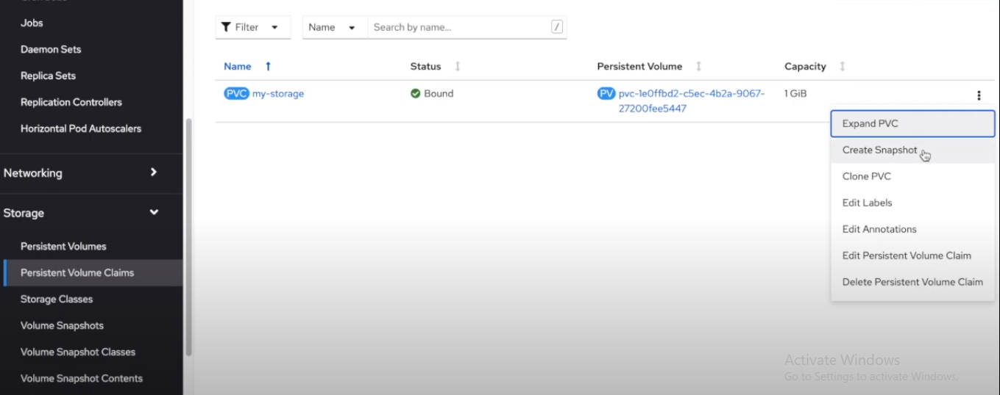
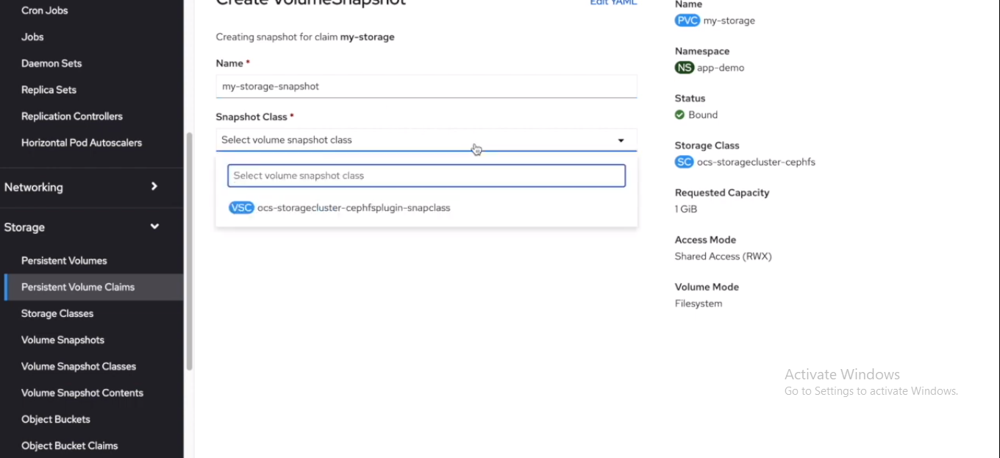
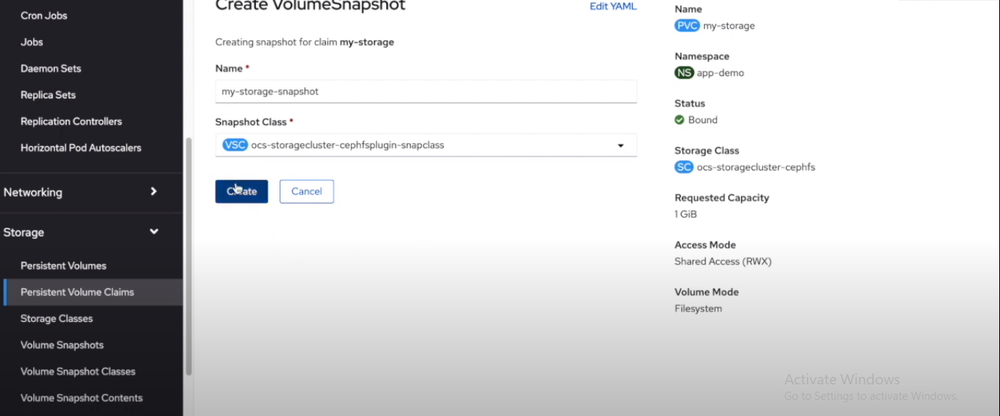
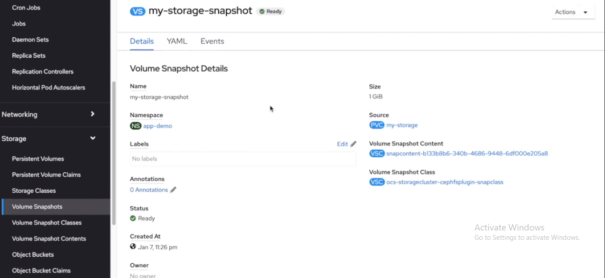
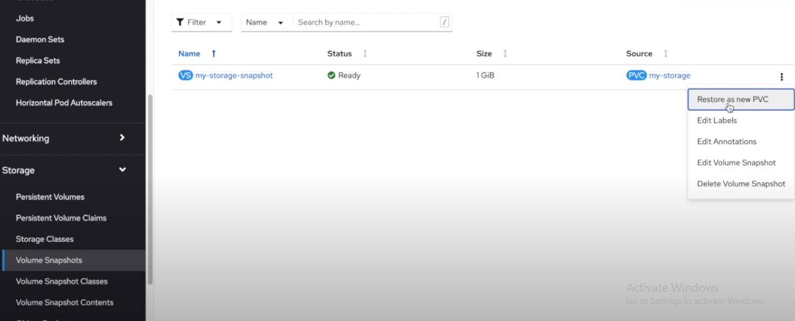
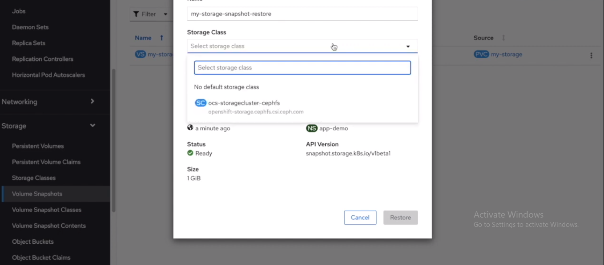
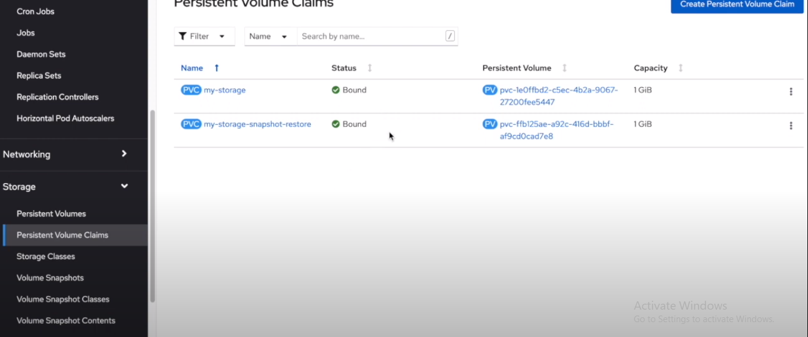
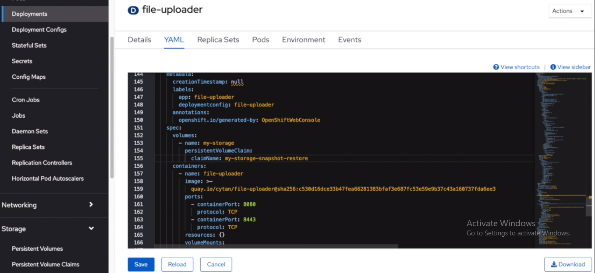

Publish
welcome to best side of Documentation, this page contains some of the IMP things to know as a Developer
GIT
Git Shallow
- git shallow allows to clone large size repositories with lesser time.
- a "shallow clone" refers to a clone of a repository that only contains a limited history of the repository's commits. When you perform a shallow clone, Git retrieves only a subset of the commits from the remote repository, truncating the history beyond a certain depth. This can be useful when you are only interested in the recent history of a project and don't need the entire commit history.
The --depth option is used to specify the depth of the clone, i.e., the number of most recent commits to fetch. For example:
git clone --depth 1 <repository-url> - To convert a shallow clone to a full clone with the entire commit history, you can use command:
git fetch --unshallow
Git lfs
- Git LFS (Large File Storage) is an extension to Git that deals with large files by replacing them with text pointers inside the Git repository, while storing the actual file content in an external storage system. This allows you to version control large binary files, such as audio, video, datasets, and other large assets, without causing significant bloat in your Git repository.
Docker
CMD Vs ENTRYPOINT
-
CMD and ENTRYPOINT are instructions used in Dockerfiles to define the command that will be run when a container is started. However, they serve different purposes and have distinct behaviors.
-
CMD Instruction: The CMD instruction in a Dockerfile sets the default command and/or parameters for the container. It provides defaults for an executing container, but these defaults can be overridden by specifying the command and parameters at runtime when the container is started.
FROM ubuntu:latest
CMD ["echo", "Hello, World!"]In this example, if no command is specified when running the container, it will execute the default echo "Hello, World!". However, a user can override the CMD instruction by specifying a different command when running the container:
docker run my-image echo Goodbye, World! -
ENTRYPOINT Instruction: The ENTRYPOINT instruction in a Dockerfile sets the main command to be run when the container starts. Unlike CMD, the ENTRYPOINT instruction does not allow for default parameters that can be overridden. Instead, any parameters specified at runtime are passed as arguments to the command defined in ENTRYPOINT.
FROM ubuntu:latest ENTRYPOINT ["echo", "Hello, World!"]
In this example, if no command is specified when running the container, it will execute the default echo "Hello, World!". However, if a user provides a command, it will be treated as arguments to the ENTRYPOINT:
docker run my-image "Goodbye, World!"
Docker-Squash
- In this article, detailed explain about Image Layering and how to use docker-squash command to reduce the size of Image.
Automated Nginx Reverse Proxy for Docker
Dockerizer
-
Dockerizer is the concept to use Docker in more efficient way, so that developer and reuse the code and additional install packages as per dependency.
-
Reason for using Dockerizer:
- in Dockerfile each RUN command create new layer (which can create huge Image size while pushing to Registry)
- Dockerizer contains Ansible & Packer concept which then help to create Image more efficient way, installing required dependency/packages and making code reusability.
Kubernetes
Storage Class and Persistent Volume
Goodbye etcd, Hello PostgreSQL: Running Kubernetes with an SQL Database
-
etcd is the brain of every Kubernetes cluster, the key-value storage keeping track of all the objects in a cluster. It's intertwined and tightly coupled with Kubernetes, and it might seem like an inseparable part of a cluster, or is it?
In this article it is explained how we could replace etcd with PostgreSQL database, as well as why and when it might make sense to do so.
Migrate data from one PVC to other (this can done within same Namespace)
-
well, for hostin any web applications or storing output files we need some kind of dataStorage. At some point our local storage wont be efficient approach when it comes to Prod Version & for multiple user.
-
Thanks to Cloud Service Companies, that provides the data-storage here there are many Storageclass available from where we can store and retrieve our data. Some of the StorageClass as AzureFile, AzureBlob, net-trident-nfs.
-
Infact, backup and mounting data from one storage to Storage, has became a easy job todo.
-
here is the simple code snippet to create a StorageClass, PVC
-
Create StorageClass yaml
-
create PVC pointing to storage class
-
To copy data to new StorageClass we need to create a new PVC pointing to newStorageClass, the above PVC yaml snippets can be helpful to create new PVC
-
Once PVC gets create, nxt is to start copying PVC by deploying helper job. Here we need to mention two PVC name for copying data from src to destination in Job
-
helper Job yaml file for copying data ( in this Job we need to mention to folder path within the pod to copy files one PVC to other)
apiVersion: batch/v1 kind: Job metadata: name: job-name spec: parallelism: 1 completions: 1 activeDeadlineSeconds: 1800 backoffLimit: 5 template: metadata: labels: app: job-name spec: volumes: - name: src persistentVolumeClaim: claimName: srcPVC-name #from where data need to copy - name: dst persistentVolumeClaim: claimName: dstPVC-name #data to be copied containers: - name: copy-data image: ubuntu/busybox command: ["/bin/bash","-c"] args: ["cp -R /src/* /dst/"] # using cp command args: ["rsync -a --progress --dry-run /mnt/src/ /mnt/dst/; echo 'will sleep now for 120 seconds. To stop process delete job..'; sleep 120; rsync -a --progress /mnt/src/ /mnt/dst/; echo 'rsync process fininshed'"] #using rsync volumeMounts: - name: src mountPath: "/mnt/src" - name: dst mountPath: "/mnt/dst" restartPolicy: OnFailure - to execute the job
oc apply -f job.yaml
-
Fetch secrets from Az-KeyVault to use secrets in Pods.
-
as secrets key plays a vital role when its comes to use credentials for authentication purpose and various implement.
-
Here Azure-KeyVault is one of the best service for (Iaas,Saas,Paas) , using Az we can also store secret values.
-
Azure Key Vault provider for Secrets Store CSI Driver allows you to get secret contents stored in an Azure Key Vault instance and use the Secrets Store CSI driver interface to mount them into Kubernetes pods.
-
Following steps mentioned about fetching KV from Azure
##add helm repo for Secrets Store CSI Driver and the Azure Keyvault Provider helm repo add csi-secrets-store-provider-azure https://azure.github.io/secrets-store-csi-driver-provider-azure/charts # deploy the secret-store-csi-driver and Azure KV Provider helm install csi csi-secrets-store-provider-azure/csi-secrets-store-provider-azure Note: The helm charts hosted in Azure/secrets-store-csi-driver-provider-azure repo include the Secrets Store CSI Driver helm charts as a dependency. Running the above helm install command will install both the Secrets Store CSI Driver and Azure Key Vault provider # ensure driver and provider pods are running kubectl get pods #if using service principal connection (Configure Service Principal to access Keyvault) Add your service principal credentials as a Kubernetes secrets oc create secret generic secrets-store-creds --from-literal clientid=<service_principal_client_id> or deploy by using yaml kind: Secret apiVersion: v1 metadata: name: service-principal lables: #update labels data: clientid: clientsecret: type: Opaque # secret class provider yaml apiVersion: secrets-store.csi.x-k8s.io/v1 kind: SecretProviderClass metadata: name: azure-kv spec: provider: azure parameters: usePodIdentity: "false" # [OPTIONAL] if not provided, will default to "false" useVMManagedIdentity: "false" # [OPTIONAL available for version > 0.0.4] if not provided, will default to "false" userAssignedIdentityID: "client_id" # [OPTIONAL available for version > 0.0.4] use the client id to specify which user assigned managed identity to use. If using a user assigned identity as the VM's managed identity, then specify the identity's client id. If empty, then defaults to use the system assigned identity on the VM clientID: "client_id" # [OPTIONAL available for version > 1.1.0] client id of the Azure AD Application or managed identity to use for workload identity keyvaultName: "kvname" # the name of the KeyVault cloudName: "" # [OPTIONAL available for version > 0.0.4] if not provided, azure environment will default to AzurePublicCloud cloudEnvFileName: "" # [OPTIONAL available for version > 0.0.7] use to define path to file for populating azure environment objects: | array: - | objectName: secret1 objectAlias: SECRET_1 # [OPTIONAL available for version > 0.0.4] object alias objectType: secret # object types: secret, key or cert. For Key Vault certificates, refer to https://azure.github.io/secrets-store-csi-driver-provider-azure/configurations/getting-certs-and-keys/ for the object type to use objectVersion: "" # [OPTIONAL] object versions, default to latest if empty objectVersionHistory: 5 # [OPTIONAL] if greater than 1, the number of versions to sync starting at the specified version. filePermission: 0755 # [OPTIONAL] permission for secret file being mounted into the pod, default is 0644 if not specified. - | objectName: key1 objectAlias: "" # If provided then it has to be referenced in [secretObjects].[objectName] to sync with Kubernetes secrets objectType: key objectVersion: "" tenantID: "tid" # the tenant ID of the KeyVault # deploy pod kind: Pod apiVersion: v1 metadata: name: demo-pod spec: containers: - image: nginx name: nginx volumeMounts: - name: secrets-store-inline mountPath: "/mnt/secrets-store" readOnly: true volumes: - name; secrets-store-inline csi: driver: secrets-store.csi.k8s.io readOnly: true volumeAttributes: secretProvider: "azure-kv" nodePublishSecretRef: #only required if using service principal name: "secret-yaml-metadata-name" #only required if using service principal (note: didnt specified commands for pod, pod will completed as soon as hosted) # deploy pod kubectl apply -f pod.yaml # check pod status kubectl get pods # show secrets held in secrets-store kubectl exec "pod-name" -- ls /mnt/secrets-store/ # print a test secret held in secrets-store kubectl exec "pod-name" -- cat /mnt/secrets-store/secret1
Volume Snapshot
-
volume snapshot using Openshift, this feature assist to create a snap of volume in given time, so that those volume can utilised for test/prod by specifying the volumesnapshot name
-
following are steps to create Snapshot using Openshift
-
select PVC for which you want to take snapshot, click on the options and select "create Snapshot"

-
Select the "VolumeSnapshotClass" (will be provided by Openshift) note : for creating volumeSnapshot, a VolumeSnapshotClass should be available.

-
select "Create"

-
after successful creation of snapshots, verify it by selecting VolumeSnapshots

-
now to restore the volumeSnapshot, create a new PVC (provided in options).

-
select the StorageClass for PVC

-
after successful creation of PVC , verify it by selecting PersistentVolumeClaims

-
now to use volume create by VolumeSnapshot, update the PVC name to pod, which is created using VolumeSnapshot.

-